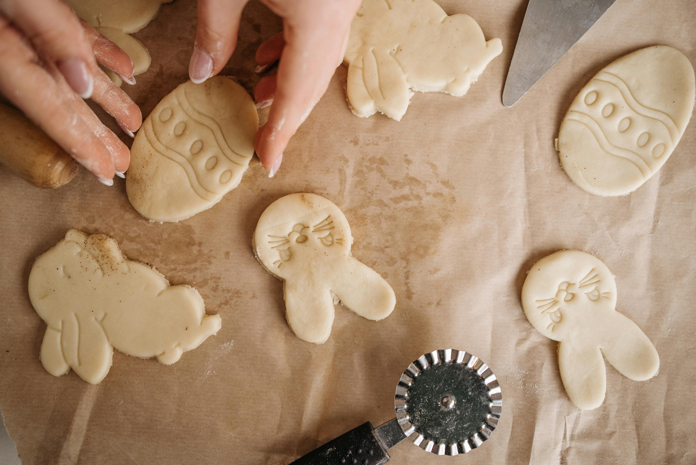
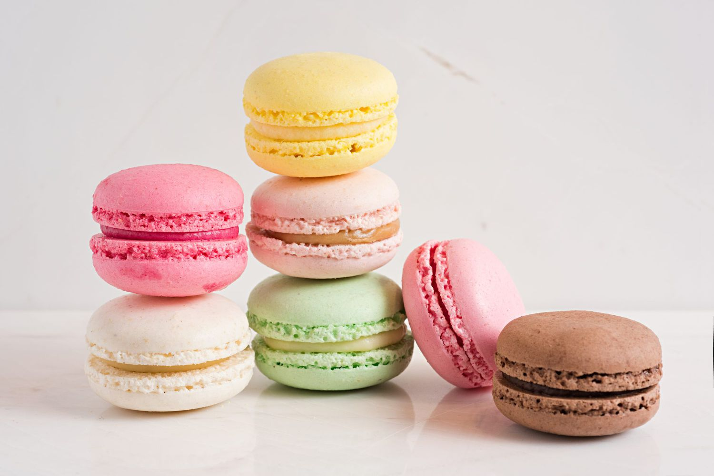

Friendship Cookies
Recipe :
- Combine sugar and cocoa and stir until very smooth. Add butter and milk.
- Microwave on high for 6 minutes.
- Slowly add and swirl any one or combination of the following ingredients:
- Microwave on high for 1 minute. Drop by teaspoon on a sheet of waxed paper. Chill
until set.

making cookies with our love.

delicious chocolate cookies made with pure chocolate.

A type of french cookies known as macarons.
Definition List :
- glumpy means sullen, morose, or sulky.
- glunch means a look of disdain,
anger, or displeasure